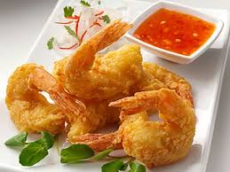

Shrimp Pakora is a dish of prawns that have been battered in a spicy mix and then deep fried. This is a wonderfully tasty appetiser for seafood lovers.
1. Start by preparing the shrimp. Ensure they are peeled, deveined, and cleaned. Pat them dry with a paper towel.
2. In a mixing bowl, combine besan (gram flour), rice flour, cornstarch, red chili powder, turmeric powder, garam masala, carom seeds (ajwain), and salt. Mix these dry ingredients well.
3. Gradually add water to the dry mixture while stirring continuously to form a thick, smooth batter. The batter should be thick enough to coat the back of a spoon.
4. Heat oil in a deep frying pan or a deep fryer over medium-high heat. Ensure there's enough oil to submerge the shrimp.
5. Once the oil is hot and shimmering, dip each shrimp into the batter, ensuring it's coated evenly.
6. Carefully drop the batter-coated shrimp into the hot oil, one at a time. Fry them in batches to avoid overcrowding, which can lower the oil temperature.
7. Fry the shrimp pakoras until they turn golden brown and crisp, which should take about 3-4 minutes. Use a slotted spoon to remove them from the oil and place them on a paper towel-lined plate to drain any excess oil.
8. Repeat the process for the remaining shrimp, ensuring the oil stays hot between batches.
9. Once all the shrimp pakoras are fried and drained, garnish them with chopped fresh coriander leaves.
10. Serve the shrimp pakoras hot with your favorite chutney or dipping sauce. You can also serve them with lemon wedges for an extra burst of flavor.